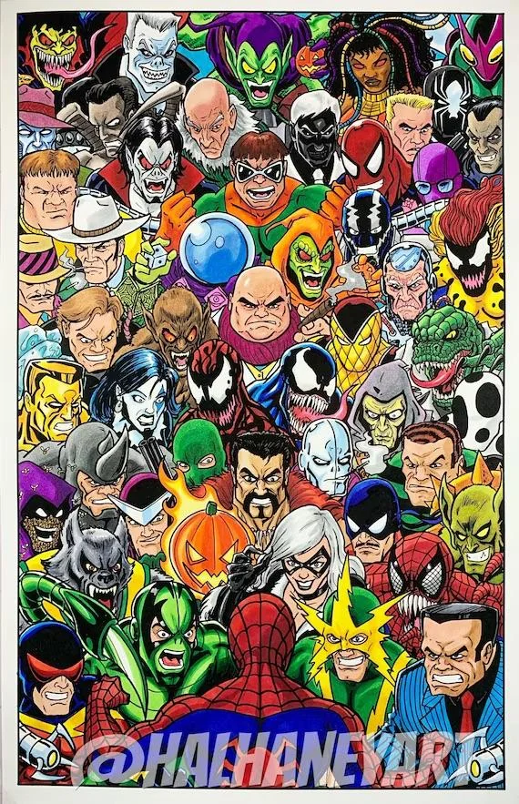

História:
O Homem-Aranha foi criado pelo escritor Stan Lee e pelo artista Steve Ditko, aparecendo pela primeira vez em agosto de 1962 na revista Amazing Fantasy #15. A criação revolucionou os quadrinhos ao introduzir um super-herói adolescente que equilibrava o combate ao crime com problemas pessoais típicos da juventude.
Seu nome verdadeiro é Peter Parker, ele é um jovem estudante que é picado por uma aranha radioativa, o que serve de catalisador para que sua vida mude por completo.
Ele se torna o famoso Homem-Aranha após a perda de seu tio Ben, evento esse que foi consequência de sua irresponsabilidade.
Poderes e Habilidades:
Como todo super-herói, o Homem-Aranha possui diversas habilidades a seu dispor, dentre elas: superforça, agilidade aprimorada, capacidade de escalar paredes e sentido aranha. Ele também possui dispositivos que o permitem lançar teias de seus pulsos.
Moral:
O Homem-Aranha segue uma moral baseada na frase que seu tio Ben disse: "Com grandes poderes vêm grandes responsabilidades.", isso implica que ele tem o dever de proteger os outros mediante qualquer situação de risco, nem que isso lhe custe seu dinheiro, futuro, relacionamento ou até mesmo sua vida.
Música Tema:
O tema principal do Homem-Aranha é uma música épica que reflete sua jornada e desafios como super-herói.
Curiosidades:
- 1. O nome verdadeiro do Homem-Aranha é Peter Benjamin Parker.
- 2. Stan Lee, criador do Homem-Aranha, fez seu design com uma máscara fechada para que seus leitores se imaginassem no manto do herói, implicando que qualquer um pode ser como ele.
- 3. O traje preto usado pelo personagem foi ideia de um dos fãs dos quadrinhos, ele não pediu nada em troca da utilização do design, essa roupa depois rendeu Milhões de dólares para Marvel por meio de filmes, brinquedos e outros.
- 4. O Homem-Aranha é um dos personagens mais populares da Marvel Comics, tendo sido adaptado para filmes, séries de TV e jogos eletrônicos.

Vilões:
Duende Verde:
O Duende Verde é um vilão icônico do Aranha, seu alter ego é Norman Osborn, pai de seu amigo de infância. Ele usa um planador para se mover e costuma utilizar granadas com formatod de abóboras de halloween.

Doutor Octopus:
O Doutor Octopus é outro vilão icônico do Homem-Aranha, seu alter ego é Otto Octavius. Ele é um cientista que se tornou um vilão após uma experiência científica falha que o transformou em um ser com quatro tentáculos metálicos.

Venom:
Venom é um vilão do Homem-Aranha, seu alter ego é Eddie Brock. Ele é um ex-jornalista que se tornou um vilão após ser infectado por uma forma de vida alienígena chamada simbionte, que se conecta ao corpo humano e aumenta suas habilidades físicas.

O Homem-Aranha possui diversos outros inimigos como o Mysterio, o Kraven, o Electro, o Escorpião, o Rhino e etc...

Filmes:
O Homem-Aranha já teve diversos filmes, o primeiro foi lançado em 2002, dirigido por Sam Raimi e estrelado por Tobey Maguire. Depois disso, houve uma série de filmes, incluindo "O Espetacular Homem-Aranha" (2012) e "Homem-Aranha: De Volta ao Lar" (2017), ambos estrelados por Andrew Garfield. O mais recente é "Homem-Aranha: Sem Volta para Casa" (2021), estrelado por Tom Holland.
| Filme | Ano | Diretor |
|---|---|---|
| Homem-Aranha | 2002 | Sam Raimi |
| Homem-Aranha 2 | 2004 | Sam Raimi |
| Homem-Aranha 3 | 2007 | Sam Raimi |
| O Espetacular Homem-Aranha | 2012 | Marc Webb |
| O Espetacular Homem-Aranha 2 | 2014 | Marc Webb |
| Homem-Aranha: De Volta ao Lar | 2017 | Jon Watts |
| Homem-Aranha: Longe de Casa | 2019 | Jon Watts |
| Homem-Aranha: Sem Volta para Casa | 2021 | Jon Watts |
Sobre Mim:
Segue um vídeo falando um pouco sobre mim e porque eu fiz este site: